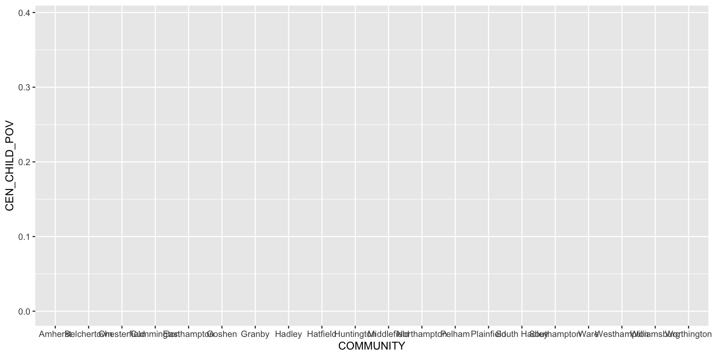
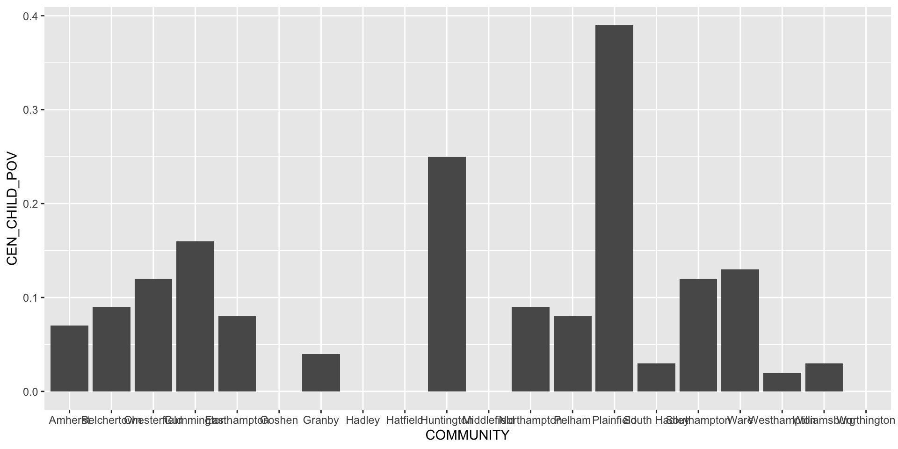
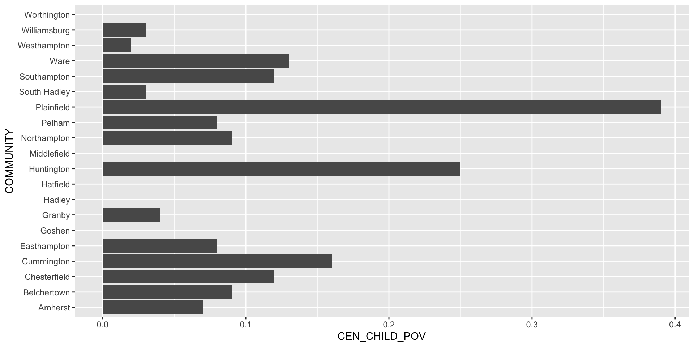
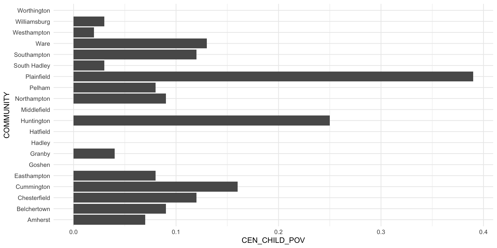
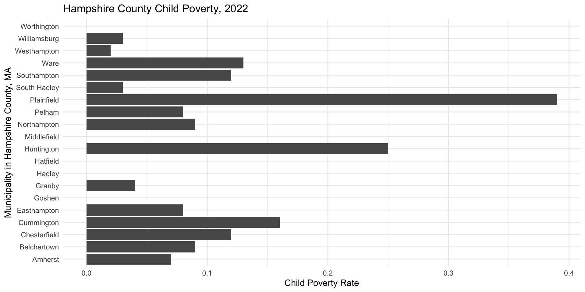
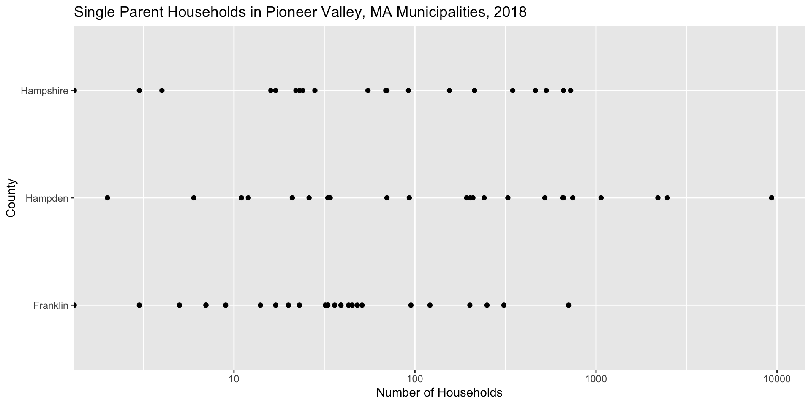
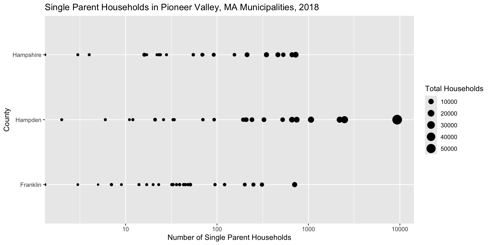
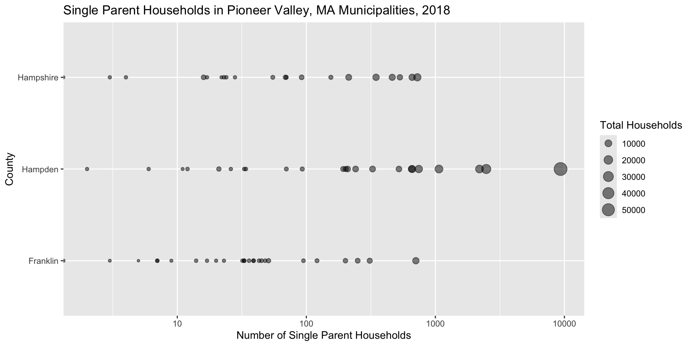

Rows: 7407 Columns: 10
── Column specification ────────────────────────────────────────────────────────
Delimiter: ","
chr (8): LEVEL_CD_NAME, STATE, COUNTY, COMMUNITY, TIME_TYPE, VAR_CAT, VAR, V...
dbl (1): YEAR
num (1): VALUE
ℹ Use `spec()` to retrieve the full column specification for this data.
ℹ Specify the column types or set `show_col_types = FALSE` to quiet this message.
Most plots we create in this course will rely on package called ggplot2
ggplot2 is included in the Tidyverse, which you installed in SDS 100
Load ggplot2 in your environment.
library(ggplot2)
Anatomy of the ggplot() function
ggplot() takes two arguments:
data: the dataset used to produce the plot (in a data frame)
mapping: the variables from the dataset we want mapped onto visual cues
mappings are defined in a function called aes() (short for aesthetics)
in Cartesian plots, we must supply the variables/columns that will appear on the axes (via x = and y =)
Anatomy of the ggplot() function
ggplot(data = hampshire_census_data, aes(x = COMMUNITY, y = CEN_CHILD_POV))

Learning check: What’s the scale of the x-axis in the plot you just created? What’s the scale of the y-axis?
Where’s the data?
In previous plot, we told Rwhat variables to plot, but we didn’t indicate how to plot them.
To do this, we need to add a geom function to our ggplot call. Examples:
Bar plots: geom_bar()
Scatterplots: geom_point()
Appended to function call with a + sign
Adding a geom function
ggplot(data = hampshire_census_data, aes(x = COMMUNITY, y = CEN_CHILD_POV)) +geom_col()

Learning check: What variables are mapped on to what visual cues in this plot?
Styling Plots: Flipping Coordinates
ggplot(data = hampshire_census_data, aes(x = COMMUNITY, y = CEN_CHILD_POV)) +geom_col() +coord_flip() # Flipping the x and y coordinates here makes the labels more legible.

Learning check: How’s the data-to-ink ratio on this plot?
Styling Plots: Changing the Theme
ggplot(data = hampshire_census_data, aes(x = COMMUNITY, y = CEN_CHILD_POV)) +geom_col() +coord_flip() +# Flipping the x and y coordinates here makes the labels more legible. theme_minimal()

Learning check: What context needs to be added to this plot?
Styling Plots: Adding Labels
ggplot(data = hampshire_census_data, aes(x = COMMUNITY, y = CEN_CHILD_POV)) +geom_col() +coord_flip() +# Flipping the x and y coordinates here makes the labels more legible. theme_minimal() +labs(title ="Hampshire County Child Poverty, 2022", x ="Municipality in Hampshire County, MA", y ="Child Poverty Rate")

Styling Plots: Adjusting the Scale
# Adjust the Scaleggplot(data = pioneer_valley_census_data, aes(x = COUNTY,y = CEN_SINGPARHOU)) +geom_point() +coord_flip() +scale_y_log10() +labs(title ="Single Parent Households in Pioneer Valley, MA Municipalities, 2018", x ="County", y ="Number of Households")
Warning in scale_y_log10(): log-10 transformation introduced infinite values.

Aeshetics vs. Attributes
We can adjust the way the data appears on plots in two ways:
According to a variable:
This must be done inside of the aes() function
In a fixed way:
This must be done outside of the aes() function
Adjusting Data on Plots via Aeshetics
We add visual cues to the plot in the aes() call
# Add visual cue for sizeggplot(data = pioneer_valley_census_data, aes(x = COUNTY,y = CEN_SINGPARHOU, size = CEN_HOUSEHOLDS)) +geom_point() +coord_flip() +scale_y_log10() +labs(title ="Single Parent Households in Pioneer Valley, MA Municipalities, 2018", x ="County", y ="Number of Single Parent Households", size ="Total Households")
Warning in scale_y_log10(): log-10 transformation introduced infinite values.

Adjusting Data on Plots via Attributes
# Add visual cue for size and attribute for transparencyggplot(data = pioneer_valley_census_data, aes(x = COUNTY,y = CEN_SINGPARHOU, size = CEN_HOUSEHOLDS)) +geom_point(alpha =0.5) +coord_flip() +scale_y_log10() +labs(title ="Single Parent Households in Pioneer Valley, MA Municipalities, 2018", x ="County", y ="Number of Single Parent Households", size ="Total Households")
Warning in scale_y_log10(): log-10 transformation introduced infinite values.

Do I really have to memorize all of these stylistic functions?!
No. There are cheatsheets. The ggplot2() cheatsheet is linked here.